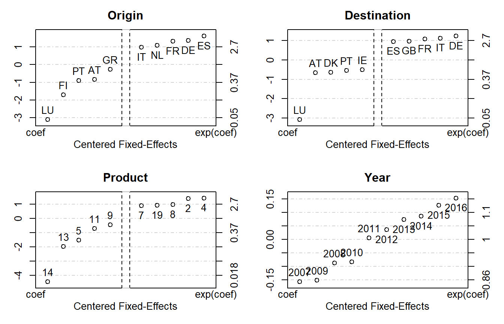
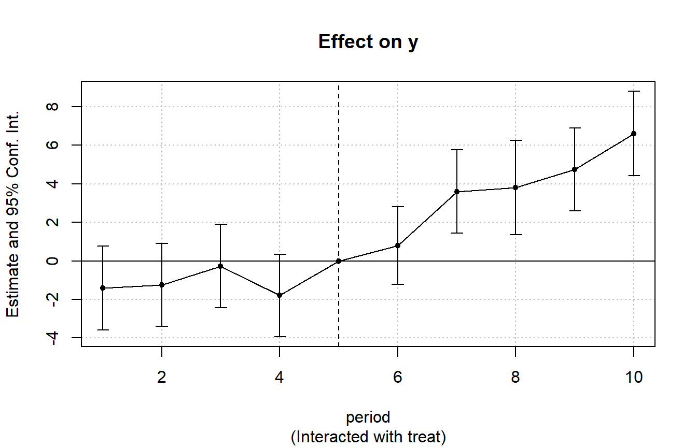

fixest_walkthrough.RmdThe package fixest provides a family of functions to perform estimations with multiple fixed-effects. The two main functions are feols for linear models and feglm for generalized linear models. In addition, the function femlm performs direct maximum likelihood estimation, and feNmlm extends the latter to allow the inclusion of non-linear in parameters right-hand-sides. Each of these functions supports any number of fixed-effects and is implemented with full fledged multi-threading in c++. Functions feols and feglm further support variables with varying slopes.
This package is currently (Nov. 2019) the fastest software available to perform fixed-effects estimations (see the project’s homepage for a benchmarking).
The standard-errors of the estimates can be easily and intuitively clustered (up to four-way).
The function etable allows to seamlessly export the results of multiple estimations into either a data.frame, or into a Latex table of “article-like” quality.
The main features of the package are illustrated in this vignette. The theory used to obtain the fixed-effects is based on Berge (2018), “Efficient estimation of maximum likelihood models with multiple fixed-effects: the R package fixest.” CREA Discussion Papers, 13 (https://wwwen.uni.lu/content/download/110162/1299525/file/2018_13).
This example deals with international trade, which is a setup that usually requires performing estimations with many fixed-effects. We estimate a very simple gravity model in which we are interested in finding out the negative effect of geographic distance on trade. The sample data consists of European trade extracted from Eurostat. Let’s load the data contained in the package:
This data is a sample of bilateral importations between EU15 countries from 2007 and 2016. The data is further broken down according to 20 product categories. Here is a sample of the data:
| Destination | Origin | Product | Year | dist_km | Euros |
|---|---|---|---|---|---|
| LU | BE | 1 | 2007 | 139.5719 | 2966697 |
| BE | LU | 1 | 2007 | 139.5719 | 6755030 |
| LU | BE | 2 | 2007 | 139.5719 | 57078782 |
| BE | LU | 2 | 2007 | 139.5719 | 7117406 |
| LU | BE | 3 | 2007 | 139.5719 | 17379821 |
| BE | LU | 3 | 2007 | 139.5719 | 2622254 |
The dependent variable of the estimation will be the level of trade between two countries while the independent variable is the geographic distance between the two countries. To obtain the elasticity of geographic distance net of the effects of the four fixed-effects, we estimate the following:
\(E\left(Trade_{i,j,p,t}\right)=\gamma_{i}^{Exporter}\times\gamma_{j}^{Importer}\times\gamma_{p}^{Product}\times\gamma_{t}^{Year}\times Distance_{ij}^{\beta}\),
where the subscripts \(i\), \(j\), \(p\) and \(t\) stand respectively for the exporting country, the importing country, the type of product and the year, and the \(\gamma_{v}^{c}\) are fixed-effects for these groups. Here \(\beta\) is the elasticity of interest.
Note that when you use the Poisson/Negative Binomial families, this relationship is in fact linear because the right hand side is exponentialized to avoid negative values for the Poisson parameter. This leads to the equivalent relation:1
\(E\left(Trade_{i,j,p,t}\right)=\exp\left(\gamma_{i}^{Exporter}+\gamma_{j}^{Importer}+\gamma_{p}^{Product}+\gamma_{t}^{Year}+\beta\times \ln Distance_{ij}\right)\).
The estimation of this model using a Poisson likelihood is as follows:
Note that you need not provide the argument family since the Poisson model is the default.
The results can be shown directly with the print method:
print(gravity_pois)
#> GLM estimation, family = poisson, Dep. Var.: Euros
#> Observations: 38,325
#> Fixed-effects: Origin: 15, Destination: 15, Product: 20, Year: 10
#> Standard-errors: Clustered (Origin)
#> Estimate Std. Error z value Pr(>|z|)
#> log(dist_km) -1.5279 0.115678 -13.208 < 2.2e-16 ***
#> ---
#> Signif. codes: 0 '***' 0.001 '**' 0.01 '*' 0.05 '.' 0.1 ' ' 1
#> Log-likelihood: -7.025e+11 Adj. Pseudo-R2: 0.76403
#> BIC: 1.405e+12 Squared Cor.: 0.61202The print reports the coefficient estimates and standard-errors as well as some other information. Among the quality of fit information, the squared-correlation corresponds to the correlation between the dependent variable and the expected predictor; it reflects somehow to the idea of R-square in OLS estimations.
To cluster the standard-errors, we can simply use the argument se of the summary method. Let’s say we want to cluster the standard-errors according to the first two fixed-effects (i.e. the Origin and Destination variables). Then we just have to do:
summary(gravity_pois, se = "twoway")
#> GLM estimation, family = poisson, Dep. Var.: Euros
#> Observations: 38,325
#> Fixed-effects: Origin: 15, Destination: 15, Product: 20, Year: 10
#> Standard-errors: Two-way (Origin & Destination)
#> Estimate Std. Error z value Pr(>|z|)
#> log(dist_km) -1.5279 0.132333 -11.546 < 2.2e-16 ***
#> ---
#> Signif. codes: 0 '***' 0.001 '**' 0.01 '*' 0.05 '.' 0.1 ' ' 1
#> Log-likelihood: -7.025e+11 Adj. Pseudo-R2: 0.76403
#> BIC: 1.405e+12 Squared Cor.: 0.61202The clustering can be done on one (se="cluster"), two (se="twoway"), three (se="threeway") or up to four (se="fourway") variables. If the estimation includes fixed-effects, then by default the clustering will be done using these fixed-effects, in the original order. This is why the Origin and Destination variables were used for the two-way clustering in the previous example. If, instead, you wanted to perform one-way clustering on the Product variable, you need to use the argument cluster:
# Equivalent ways of clustering the SEs:
# One-way clustering is deduced from the arguent 'cluster'
# - using the vector:
summary(gravity_pois, cluster = trade$Product)
#> GLM estimation, family = poisson, Dep. Var.: Euros
#> Observations: 38,325
#> Fixed-effects: Origin: 15, Destination: 15, Product: 20, Year: 10
#> Standard-errors: Clustered
#> Estimate Std. Error z value Pr(>|z|)
#> log(dist_km) -1.5279 0.098294 -15.544 < 2.2e-16 ***
#> ---
#> Signif. codes: 0 '***' 0.001 '**' 0.01 '*' 0.05 '.' 0.1 ' ' 1
#> Log-likelihood: -7.025e+11 Adj. Pseudo-R2: 0.76403
#> BIC: 1.405e+12 Squared Cor.: 0.61202
# - by reference:
summary(gravity_pois, cluster = "Product")
#> GLM estimation, family = poisson, Dep. Var.: Euros
#> Observations: 38,325
#> Fixed-effects: Origin: 15, Destination: 15, Product: 20, Year: 10
#> Standard-errors: Clustered (Product)
#> Estimate Std. Error z value Pr(>|z|)
#> log(dist_km) -1.5279 0.098294 -15.544 < 2.2e-16 ***
#> ---
#> Signif. codes: 0 '***' 0.001 '**' 0.01 '*' 0.05 '.' 0.1 ' ' 1
#> Log-likelihood: -7.025e+11 Adj. Pseudo-R2: 0.76403
#> BIC: 1.405e+12 Squared Cor.: 0.61202
# - with a formula:
summary(gravity_pois, cluster = ~Product)
#> GLM estimation, family = poisson, Dep. Var.: Euros
#> Observations: 38,325
#> Fixed-effects: Origin: 15, Destination: 15, Product: 20, Year: 10
#> Standard-errors: Clustered (Product)
#> Estimate Std. Error z value Pr(>|z|)
#> log(dist_km) -1.5279 0.098294 -15.544 < 2.2e-16 ***
#> ---
#> Signif. codes: 0 '***' 0.001 '**' 0.01 '*' 0.05 '.' 0.1 ' ' 1
#> Log-likelihood: -7.025e+11 Adj. Pseudo-R2: 0.76403
#> BIC: 1.405e+12 Squared Cor.: 0.61202Note that you can always cluster the standard-errors, even when the estimation contained no fixed-effect. Buth then you must use the argument cluster:
gravity_simple = feglm(Euros ~ log(dist_km), trade)
# Two way clustering is deduced from the argument 'cluster'
# Using data:
summary(gravity_simple, cluster = trade[, c("Origin", "Destination")])
#> GLM estimation, family = poisson, Dep. Var.: Euros
#> Observations: 38,325
#> Standard-errors: Two-way
#> Estimate Std. Error z value Pr(>|z|)
#> (Intercept) 24.709 1.159900 21.3030 < 2.2e-16 ***
#> log(dist_km) -1.029 0.163166 -6.3062 2.89e-10 ***
#> ---
#> Signif. codes: 0 '***' 0.001 '**' 0.01 '*' 0.05 '.' 0.1 ' ' 1
#> Log-likelihood: -2.426e+12 Adj. Pseudo-R2: 0.18502
#> BIC: 4.852e+12 Squared Cor.: 0.05511
# Using a formula (note that the values of the variables are
# fetched directly in the original database):
summary(gravity_simple, cluster = ~Origin+Destination)
#> GLM estimation, family = poisson, Dep. Var.: Euros
#> Observations: 38,325
#> Standard-errors: Two-way (Origin & Destination)
#> Estimate Std. Error z value Pr(>|z|)
#> (Intercept) 24.709 1.159900 21.3030 < 2.2e-16 ***
#> log(dist_km) -1.029 0.163166 -6.3062 2.89e-10 ***
#> ---
#> Signif. codes: 0 '***' 0.001 '**' 0.01 '*' 0.05 '.' 0.1 ' ' 1
#> Log-likelihood: -2.426e+12 Adj. Pseudo-R2: 0.18502
#> BIC: 4.852e+12 Squared Cor.: 0.05511Now we estimate the same relationship by OLS. We need to put the left hand side in logarithm (since the right-hand-side is not exponentialized):
Of course you can use different families in feglm, exactly as in glm.
To get the estimation for the fixed-effects Negative Binomial:
Now let’s say that we want a compact overview of the results of several estimations. The best way is to use the function etable. This function summarizes the results of several fixest estimations into a data.frame. To see the fixed-effects results with the three different likelihoods, we just have to type:
etable(gravity_pois, gravity_negbin, gravity_ols,
se = "twoway", subtitles = c("Poisson", "Negative Binomial", "Gaussian"))| Poisson | Negative Binomial | Gaussian | |
|---|---|---|---|
| Dependent Var.: | Euros | Euros | log(Euros) |
| log(dist_km) | -1.5279*** (0.1323) | -1.7108*** (0.1798) | -2.1699*** (0.174) |
| Overdispersion: | 0.548774 | ||
| Fixed-Effects: | ——————- | ——————- | —————— |
| Origin | Yes | Yes | Yes |
| Destination | Yes | Yes | Yes |
| Product | Yes | Yes | Yes |
| Year | Yes | Yes | Yes |
| ___________________ | ___________________ | ___________________ | __________________ |
| Family | Poisson | Neg. Bin. | OLS |
| Observations | 38,325 | 38,325 | 38,325 |
| SE type: Two-way | by: Orig. & Dest. | by: Orig. & Dest. | by: Orig. & Dest. |
| Squared Corr. | 0.612 | 0.438 | 0.706 |
| Pseudo R2 | 0.76403 | 0.03473 | 0.2364 |
| BIC | 1.405e+12 | 1,294,419.32 | 152,589.34 |
We added the argument se="twoway" to cluster the standard-errors for all estimations. As can be seen this function gives an overview of the estimates and standard-errors, as well as some quality of fit measures. The argument titles is used to add information on each estimation column.
In the previous example, we directly added the estimation results as arguments of the function etable. But the function also accepts lists of estimations. Let’s give an example. Say you want to see the influence of the introduction of fixed-effects on the estimate of the elasticity of distance. You can do it with the following code where we use the argument fixef to include fixed-effects (instead of inserting them directly in the formula):
gravity_subfe = list()
all_FEs = c("Year", "Destination", "Origin")
for(i in 0:3){
gravity_subfe[[i+1]] = feglm(Euros ~ log(dist_km), trade, fixef = all_FEs[0:i])
}The previous code performs 4 estimations with an increasing number of fixed-effects and store their results into the list named gravity_subfe. To show the results of all 4 estimations, it’s easy:
| model 1 | model 2 | model 3 | model 4 | |
|---|---|---|---|---|
| (Intercept) | 24.7089*** (1.1599) | |||
| log(dist_km) | -1.029*** (0.1632) | -1.0293*** (0.1633) | -1.2257*** (0.2084) | -1.5176*** (0.1297) |
| Fixed-Effects: | ——————- | ——————- | ——————- | ——————- |
| Year | No | Yes | Yes | Yes |
| Destination | No | No | Yes | Yes |
| Origin | No | No | No | Yes |
| ___________________ | ___________________ | ___________________ | ___________________ | ___________________ |
| Observations | 38,325 | 38,325 | 38,325 | 38,325 |
| SE type: Two-way | by: Orig. & Dest. | by: Orig. & Dest. | by: Orig. & Dest. | by: Orig. & Dest. |
| Squared Corr. | 0.055 | 0.057 | 0.164 | 0.385 |
| Pseudo R2 | 0.18502 | 0.18833 | 0.35826 | 0.59312 |
| BIC | 4.852e+12 | 4.833e+12 | 3.821e+12 | 2.423e+12 |
We have a view of the 4 estimations, all reporting two-way clustered standard-errors thanks to the use of the argument cluster.
So far we have seen how to report the results of multiple estimations on the R console. Now, using the same function etable, we can also export the results to high quality Latex tables. We just need to provide the argument tex = TRUE:
# with two-way clustered SEs
etable(gravity_subfe, cluster = ~Origin+Destination, tex = TRUE)
#> \begin{table}[htbp]\centering
#> \caption{no title}
#> \begin{tabular}{lcccc}
#> & & & & \tabularnewline
#> \hline
#> \hline
#> Dependent Variable:&\multicolumn{4}{c}{Euros}\\
#> Model:&(1)&(2)&(3)&(4)\\
#> \hline
#> \emph{Variables}\tabularnewline
#> (Intercept)&24.709$^{***}$& & & \\
#> &(1.1599)& & & \\
#> log(dist\_km)&-1.0290$^{***}$&-1.0293$^{***}$&-1.2257$^{***}$&-1.5176$^{***}$\\
#> &(0.1632)&(0.1633)&(0.2084)&(0.1297)\\
#> \hline
#> \emph{Fixed-Effects}& & & & \\
#> Year&No&Yes&Yes&Yes\\
#> Destination&No&No&Yes&Yes\\
#> Origin&No&No&No&Yes\\
#> \hline
#> \emph{Fit statistics}& & & & \\
#> Observations& 38,325&38,325&38,325&38,325\\
#> Squared Correlation & 0.055&0.057&0.164&0.385\\
#> Pseudo R$^2$ & 0.18502&0.18833&0.35826&0.59312\\
#> BIC & $4.852\times 10^{12}$&$4.833\times 10^{12}$&$3.821\times 10^{12}$&$2.423\times 10^{12}$\\
#> \hline
#> \hline
#> \multicolumn{5}{l}{\emph{Two-way (Origin \& Destination) standard-errors in parentheses.}}\\
#> \multicolumn{5}{l}{\emph{Signif Codes: ***: 0.01, **: 0.05, *: 0.1}}\\
#> \end{tabular}
#> \end{table}The user can export the Latex table directly into a file (argument file), add a title (arg. title) and a label to the table (arg. label). Note that when the argument file is present, the Latex format becomes the default (i.e. tex = TRUE by default).
The coefficients can be renamed easily (arg. dict), some can be dropped (arg. drop) and they can be easily reordered with regular expressions (arg. order).
The significance codes can easily be changed (arg. signifCode) and all quality of fit information can be customized. Among others, the number of fixed-effect per fixed-effect dimension can also be displayed using the argument fixef_sizes.
Consider the following example of the exportation of two tables:
# we set the dictionary once and for all
myDict = c("log(dist_km)" = "$\\ln (Distance)$", "(Intercept)" = "Constant")
# 1st export: we change the signif code and drop the intercept
etable(gravity_subfe, signifCode = c("a" = 0.01, "b" = 0.05),
drop = "Const", dict = myDict, file = "Estimation Tables.tex",
replace = TRUE, title = "First export -- normal Standard-errors")
# 2nd export: clustered S-E + distance as the first coefficient
etable(gravity_subfe, cluster = ~Product, order = "Dist",
dict = myDict, file = "Estimation Tables.tex",
title = "Second export -- clustered standard-errors (on Product variable)")In this example, two tables containing the results of the 4 estimations are directly exported to a Latex table into the file “Estimation Tables.tex”. First take notice (again) that we do not need to use the argument tex=TRUE since when the argument file is present, the Latex format becomes the default. The file is re-created in the first exportation thanks to the argument replace = TRUE.
To change the variable names in the Latex table, we use the argument dict. The variable myDict is the dictionary we use to rename the variables, it is simply a named vector. The original name of the variables correspond to the names of myDict while the new names of the variables are the values of this vector. Any variable that matches the names of myDict will be replaced by its value. Thus we do not care of the order of appearance of the variables in the estimation results.
In the first export, the coefficient of the intercept is dropped by using drop = "Const" (could be anything such that grepl(drop[1], "Constant") is TRUE). In the second, the coefficient of the distance is put before the intercept (which is kept) thanks to the argument order. Note that the actions performed by the arguments drop or order are performed after the renaming takes place with the argument dict.
To obtain the fixed-effects of the estimation, the function fixef must be performed on the results. This function returns a list containing the fixed-effects coefficients for each dimension. The summary method helps to have a quick overview:
fixedEffects <- fixef(gravity_pois)
summary(fixedEffects)
#> Fixed_effects coefficients
#> Origin Destination Product Year
#> Number of fixed-effects 15 15 20 10
#> Number of references 0 1 1 1
#> Mean 23.3 3.09 0.0129 0.157
#> Variance 1.63 1.23 1.86 0.0129
#>
#> COEFFICIENTS:
#> Origin: SE PT NL LU IT
#> 23.25 22.44 24.43 20.23 24.33 ... 10 remaining
#> -----
#> Destination: SE PT NL LU IT
#> 3.57 2.552 3.231 0 4.218 ... 10 remaining
#> -----
#> Product: 1 2 3 4 5
#> 0 1.414 0.6562 1.449 -1.521 ... 15 remaining
#> -----
#> Year: 2007 2008 2009 2010 2011
#> 0 0.06912 0.005225 0.07331 0.163 ... 5 remainingWe can see that the fixed-effects are balanced across the dimensions. Indeed, apart from the first dimension, only one coefficient per fixed-effect needs to be set as reference (i.e. fixed to 0) to avoid collinearity across the different fixed-effects dimensions. This ensures that the fixed-effects coefficients can be compared within a given fixed-effect dimension. Had there be strictly more than one reference per fixed-effect dimension, their interpretation would have not been possible at all. If this was the case though, a warning message would have been prompted. Note that the mean values are meaningless per se, but give a reference points to which compare the fixed-effects within a dimension. Let’s look specifically at the Year fixed-effects:
fixedEffects$Year
#> 2007 2008 2009 2010 2011 2012
#> 0.000000000 0.069122284 0.005225473 0.073308208 0.163013386 0.192605170
#> 2013 2014 2015 2016
#> 0.230629376 0.242605404 0.282800683 0.310325692Finally, the plot method helps to distinguish the most notable fixed-effects:

For each dimension, the fixed-effects are first centered, then sorted, and finally the most notable (i.e. highest and lowest) are reported. The exponential of the coefficient is reported in the right hand side to simplify the interpretation for models with log-link (as the Poisson model). As we can see from the country of destination fixed-effects, trade involving France (FR), Italy (IT) and Germany (DE) as destination countries is more than 2.7 times higher than the EU15 average. Further, the highest heterogeneity come from the product category, where trade in product 4 (dairy products) is roughly 2.7 times the average while product 14 (vegetable plaiting materials) represents a negligible fraction of the average.
Note however that the interpretation of the fixed-effects must be taken with extra care. In particular, here the fixed-effects can be interpreted only because they are perfectly balanced.
Now we present some other features of the package. First the possibility to add variables with varying slopes. Second how to combine several fixed-effects. Third, in the case of difference-in-difference analysis, the estimation and graph of the yearly average treatment effects. Fourth the lag.formula utility to lag variables easily. Fifth the possibility for non-linear in parameter estimation. Finally the use of parallelism to accelerate the estimation.
You can introduce variables with varying slopes directly in the fixed-effects part of the formula using square brackets. Let’s go through a simple example using iris data:
We want to estimate x1 as a function of x2 and the variable x3 with slopes varying according to species. We also want the species fixed-effect. We just have to do:
est_vs = feols(x1 ~ x2 | species[x3], base_vs)
est_vs
#> OLS estimation, Dep. Var.: x1
#> Observations: 150
#> Fixed-effects: species: 3
#> Varying slopes: x3 (species: 3)
#> Standard-errors: Clustered (species)
#> Estimate Std. Error z value Pr(>|z|)
#> x2 0.450006 0.156193 2.8811 0.004574 **
#> ---
#> Signif. codes: 0 '***' 0.001 '**' 0.01 '*' 0.05 '.' 0.1 ' ' 1
#> Log-likelihood: -31.59 Adj. R2: 0.86351
#> R2-Within: 0.17894If you want to see the slopes for x3, just use the function fixef:
summary(fixef(est_vs))
#> Fixed-effects/Slope coefficients
#> species x3 (slopes: species)
#> Number of fixed-effects/slopes 3 3
#> Number of references 0 0
#> Mean 1.7 0.639
#> Variance 1.74 0.069
#>
#> COEFFICIENTS:
#> species: setosa virginica versicolor
#> 2.927 0.3036 1.879
#> -----
#> x3 (slopes: species): setosa virginica versicolor
#> 0.3667 0.8909 0.6599Let’s use the data we created in the previous section, and add a new variable:
# we create another "fixed-effect"
base_vs$fe = rep(1:5, 30)
head(base_vs)
#> x1 x2 x3 x4 species fe
#> 1 5.1 3.5 1.4 0.2 setosa 1
#> 2 4.9 3.0 1.4 0.2 setosa 2
#> 3 4.7 3.2 1.3 0.2 setosa 3
#> 4 4.6 3.1 1.5 0.2 setosa 4
#> 5 5.0 3.6 1.4 0.2 setosa 5
#> 6 5.4 3.9 1.7 0.4 setosa 1Say we want to “combine” the variable species with the variable fe and create a brand new fixed-effect variable. We can do it simply using ^:
est_comb = feols(x1 ~ x2 | species^fe, base_vs)
est_comb
#> OLS estimation, Dep. Var.: x1
#> Observations: 150
#> Fixed-effects: species^fe: 15
#> Standard-errors: Clustered (species^fe)
#> Estimate Std. Error z value Pr(>|z|)
#> x2 0.782815 0.119064 6.5748 9.98e-10 ***
#> ---
#> Signif. codes: 0 '***' 0.001 '**' 0.01 '*' 0.05 '.' 0.1 ' ' 1
#> Log-likelihood: -77.92 Adj. R2: 0.72986
#> R2-Within: 0.28023The function ^ does the same as paste0(species, "_", fe) but is more convenient (and faster for large data sets). You can still extract the fixed-effects the same way:
fixef(est_comb)[[1]]
#> virginica_5 virginica_4 virginica_3 virginica_2 virginica_1
#> 4.159382 4.216804 4.423725 3.986351 4.513272
#> versicolor_5 versicolor_4 versicolor_3 versicolor_2 versicolor_1
#> 3.575086 3.745539 4.003367 3.800694 3.713320
#> setosa_5 setosa_4 setosa_3 setosa_2 setosa_1
#> 2.323630 2.296256 2.164943 2.384084 2.443630The package fixest offers a special tool to add interactions in estimations. You can simply add var::fe(ref) in the formula, and the variable var will be interacted with the values taken by fe, with the argument ref specifying a reference value of fe. Using this syntax opens up a special treatment of the results when using the function etable and coefplot, as will be shown.
In some difference-in-difference analyses, it is often useful not only to have the total treatment effect but to trace the evolution of the treatment. Let’s take an example. In the following data base, some persons (identified with the variable id) receive a treatment and others not, represented by the variable treat. The treatment takes effect from period 6 onwards.
# Sample data illustrating the DiD
data(base_did)
head(base_did)
# Estimation of yearly effect
# We also add individual/time fixed-effects:
est_did = feols(y ~ x1 + treat::period(5) | id + period, base_did)
est_did#> y x1 id period post treat
#> 1 2.87530627 0.5365377 1 1 0 1
#> 2 1.86065272 -3.0431894 1 2 0 1
#> 3 0.09416524 5.5768439 1 3 0 1
#> 4 3.78147485 -2.8300587 1 4 0 1
#> 5 -2.55819959 -5.0443544 1 5 0 1
#> 6 1.72873240 -0.6363849 1 6 1 1
#> OLS estimation, Dep. Var.: y
#> Observations: 1,080
#> Fixed-effects: id: 108, period: 10
#> Standard-errors: Clustered (id)
#> Estimate Std. Error z value Pr(>|z|)
#> x1 0.973490 0.045678 21.312000 < 2.2e-16 ***
#> treat:period::1 -1.403000 1.110300 -1.263700 0.206646
#> treat:period::2 -1.247500 1.093100 -1.141200 0.254068
#> treat:period::3 -0.273206 1.106900 -0.246813 0.805106
#> treat:period::4 -1.795700 1.088000 -1.650500 0.099166 .
#> treat:period::6 0.784452 1.028400 0.762798 0.445773
#> treat:period::7 3.598900 1.101600 3.267100 0.001125 **
#> treat:period::8 3.811800 1.247500 3.055500 0.002309 **
#> treat:period::9 4.731400 1.097100 4.312600 1.8e-05 ***
#> treat:period::10 6.606200 1.120500 5.895800 5.17e-09 ***
#> ---
#> Signif. codes: 0 '***' 0.001 '**' 0.01 '*' 0.05 '.' 0.1 ' ' 1
#> Log-likelihood: -2,984.58 Adj. R2: 0.48783
#> R2-Within: 0.38963In the example above, we create the interaction between the variable treat and the periods using the syntax var::fe(ref) (here treat::period(5)) with, in parenthesis, the reference. (Note that we need a reference otherwise, there is a collinearity problem because of the fixed-effect id.)
Now to display the yearly treatment effects on a graph, we can use the function coefplot:

The function coefplot detects that the results contain interactions and plot the appropriate graph. In case you wanted to display al the coefficients, including , you can use the argument .
Some methods have been created to easily deal with leads and lags in a panel setting. First is shown the various ways of how to deal with it in a fixest estimation, then how to create a panel data set, last is described a general way to create lead and lag variables.
There are two ways to provide leads and/or lags in a fixest estimation. Either “on-the-fly” by using the argument panel.id, either by setting up a panel data set with the function panel (useful if you run multiple models needing lags and/or leads), described in the next subsection.
To set up the panel on-the-fly, you need to use the panel.id argument, which will give you access to the functions f and l to create leads and lags, respectively. Let’s give an example, using the previous data set, where we use lags and leads of the explanatory and dependent variables.
est1 = feols(y~l(x1, 0:1), base_did, panel.id = ~id+period)
#> NOTE: 108 observations removed because of NA values (Breakup: LHS: 0, RHS: 108).
est2 = feols(f(y)~l(x1, -1:1), base_did, panel.id = ~id+period)
#> NOTE: 216 observations removed because of NA values (Breakup: LHS: 108, RHS: 216).
est3 = feols(l(y)~l(x1, 0:3), base_did, panel.id = ~id+period)
#> NOTE: 324 observations removed because of NA values (Breakup: LHS: 108, RHS: 324).
etable(est1, est2, est3, order = "f", drop="Int")
#> est1 est2
#> Dependent Var.: y f(y,1)
#>
#> f(x1,1) 0.994*** (0.0578)
#> x1 0.9948*** (0.0531) 0.0081 (0.0584)
#> l(x1,1) 0.041 (0.054) 0.0157 (0.0585)
#> l(x1,2)
#> l(x1,3)
#> ___________________ __________________ _________________
#> Observations 972 864
#> S.E. type Standard Standard
#> R2 0.26558 0.25697
#> Adjusted R2 0.26406 0.25438
#> est3
#> Dependent Var.: l(y,1)
#>
#> f(x1,1)
#> x1 -0.0534 (0.0599)
#> l(x1,1) 0.9871*** (0.0613)
#> l(x1,2) 0.022 (0.0607)
#> l(x1,3) 0.0102 (0.0598)
#> ___________________ __________________
#> Observations 756
#> S.E. type Standard
#> R2 0.25875
#> Adjusted R2 0.2548First of all, the value of panel.id corresponds to panel identifiers: first comes the variable identifying the panel-individuals, then comes the variables identifying the time. In the example, the panel.id came in the form of a one-sided formula, but it could equivalently be equal to panel.id = c("id", "period") or panel.id = "id,period".
As we can see, in the first estimation, a lag is created with the function l. The second argument of the function consists of a vector giving the lags we want. In this case, l(x1, 0:1) means we want x1 and the first lag of x1. This argument accepts negative values which give leads, as shown in the second estimation where l(x1, -1:1) means that we want the first lead of x1, x1, then its first lag. In this example, we also use the first lead of y as a dependent variable with f(y).
You can set up a panel data set with the function panel. There are between two and three advantages of doing so. First, if you have to estimate many models with leads and/or lags, setting up a panel gives you access to the lagging functions, f and l, without having to provide the panel.id argument we’ve seen in the previous subsection. Second, even when you estimate models with a sub-selection of the panel data, the data set is still a proper panel, meaning you can still use the lagging functions. Finally, and only if you are a data.table user, you can use the lagging functions to create new variables.
Let’s repeat the previous example, now with a panel data set:
# setting up the panel
pdat = panel(base_did, ~id+period)
# Now the panel.id argument is not required
est1 = feols(y~l(x1, 0:1), pdat)
#> NOTE: 108 observations removed because of NA values (Breakup: LHS: 0, RHS: 108).
est2 = feols(f(y)~l(x1, -1:1), pdat)
#> NOTE: 216 observations removed because of NA values (Breakup: LHS: 108, RHS: 216).
# You can use sub selections of the panel data
est_sub = feols(y~l(x1, 0:1), pdat[!pdat$period %in% c(2, 4)])
#> NOTE: 324 observations removed because of NA values (Breakup: LHS: 0, RHS: 324).
etable(est1, est2, est_sub, order = "f", drop="Int")
#> est1 est2 est_sub
#> Dependent Var.: y f(y,1) y
#>
#> f(x1,1) 0.994*** (0.0578)
#> x1 0.9948*** (0.0531) 0.0081 (0.0584) 1.013*** (0.0732)
#> l(x1,1) 0.041 (0.054) 0.0157 (0.0585) -0.0063 (0.0762)
#> ___________________ __________________ _________________ _________________
#> Observations 972 864 540
#> S.E. type Standard Standard Standard
#> R2 0.26558 0.25697 0.26258
#> Adjusted R2 0.26406 0.25438 0.25983Last, if you also use data.table, let’s give an example of lead/lag creation:
library(data.table)
pdat_dt = panel(as.data.table(base_did), ~id+period)
# we create a lagged value of the variable x1
pdat_dt[, x1_l1 := l(x1)]
#> [1] TRUE
# Now
pdat_dt[, c("x1_l1_fill0", "y_f2") := .(l(x1, fill = 0), f(y, 2))]
#> [1] TRUE
head(pdat_dt)
#> y x1 id period post treat x1_l1 x1_l1_fill0
#> 1: 2.87530627 0.5365377 1 1 0 1 NA 0.0000000
#> 2: 1.86065272 -3.0431894 1 2 0 1 0.5365377 0.5365377
#> 3: 0.09416524 5.5768439 1 3 0 1 -3.0431894 -3.0431894
#> 4: 3.78147485 -2.8300587 1 4 0 1 5.5768439 5.5768439
#> 5: -2.55819959 -5.0443544 1 5 0 1 -2.8300587 -2.8300587
#> 6: 1.72873240 -0.6363849 1 6 1 1 -5.0443544 -5.0443544
#> y_f2
#> 1: 0.09416524
#> 2: 3.78147485
#> 3: -2.55819959
#> 4: 1.72873240
#> 5: 6.28423629
#> 6: 4.76688778If you just want to create a single lag/lead variable, a simple and fast method has been implemented: lag.formula. Let’s give an example:
base_lag = base_did
# we create a lagged value of the variable x1
base_lag$x1.l1 = lag(x1~id+period, 1, base_lag)
head(base_lag)
#> y x1 id period post treat x1.l1
#> 1 2.87530627 0.5365377 1 1 0 1 NA
#> 2 1.86065272 -3.0431894 1 2 0 1 0.5365377
#> 3 0.09416524 5.5768439 1 3 0 1 -3.0431894
#> 4 3.78147485 -2.8300587 1 4 0 1 5.5768439
#> 5 -2.55819959 -5.0443544 1 5 0 1 -2.8300587
#> 6 1.72873240 -0.6363849 1 6 1 1 -5.0443544The first two arguments are mandatory. The formula informs on the variable to be lagged (on the left hand side), and the two panel identifiers. Note that the time index must appear second. The second argument tells how much lags we want. Using negative values gives leads. Finally the last argument informs on where to find the variables.
In case you use the popular package data.table, you can create lagged variables very simply:
The function feNmlm is similar to femlm but allows to have non-linear in parameters right-hand-sides (RHS). First an example without fixed-effects, the one with fixed-effects is given later. Let’s say we want to estimate the following relation with a Poisson model:
\(E\left(z_i\right) = a\times x_i + b\times y_i\).
In fact, this type of model is non-linear in the context of a Poisson model because the sum is embedded within the log:
\(E\left(z_i\right) = \exp\left(\log\left(a\times x_i + b\times y_i\right)\right)\).
So let’s estimate such a relation. (Note that you can estimate this relation with GLM and identity link, but I carry on for the example.) First we generate the data:
# Generating data:
n = 1000
# x and y: two positive random variables
x = rnorm(n, 1, 5)**2
y = rnorm(n, -1, 5)**2
# E(z) = 2*x + 3*y and some noise
z = rpois(n, 2*x + 3*y) + rpois(n, 1)
base = data.frame(x, y, z)To estimate the non-linear relationship, we need to use the argument NL.fml where we put the non-linear part. We also have to provide starting values with the argument NL.start. Finally, to ensure the RHS can be evaluated in any situation, we add lower bounds for the parameters with the argument lower.
result_NL = feNmlm(z~0, base, NL.fml = ~ log(a*x + b*y), NL.start = list(a=1, b=1), lower = list(a=0, b=0))Note that the arguments NL.start and lower are named lists. Setting lower = list(a=0, b=0) means that the optimization algorithm will never explore parameters for \(a\) and \(b\) that are lower than 0. The results obtained can be interpreted similarly to results with linear RHS. We can see them with a print:
print(result_NL)
#> Non-linear ML estimation, family = Poisson, Dep. Var.: z
#> Observations: 1,000
#> Standard-errors: Standard
#> Estimate Std. Error z value Pr(>|z|)
#> a 2.0235 0.011243 179.99 < 2.2e-16 ***
#> b 3.0204 0.012927 233.66 < 2.2e-16 ***
#> ---
#> Signif. codes: 0 '***' 0.001 '**' 0.01 '*' 0.05 '.' 0.1 ' ' 1
#> Log-likelihood: -3,622.11 Adj. Pseudo-R2: 0.93656
#> BIC: 7,271.85 Squared Cor.: 0.99193We can see that we obtain coefficients close to the generating values.
Adding fixed-effects is identical to the linear case. The user must only be well aware of the functional form. Indeed, the fixed-effects must enter the estimation linearly. This means that the previous equation with one set of fixed-effects writes:
\(E\left(z_i\right) = \gamma_{id_i} \left( a\times x_i + b\times y_i \right)\),
where \(id_i\) is the class of observation \(i\) and \(\gamma\) is the vector of fixed-effects. Here the fixed-effects are in fact linear because in the context of the Poisson model we estimate:
\(E\left(z_i\right) = \exp\left(\gamma_{id_i}+\log\left(a\times x_i + b\times y_i\right)\right)\).
Further, remark that there exists an infinity of values of \(\gamma^{\prime}\), \(a^{\prime}\) and \(b^{\prime}\) such that:
\(\gamma_{k} \left( a\times x_i + b\times y_i \right) = \gamma_{k}^{\prime} \left(a^{\prime}\times x_i + b^{\prime}\times y_i \right),\forall i,k\).
An example is \(\gamma^{\prime}_{k} = 2\times \gamma_k\), \(a^{\prime} = a/2\) and \(b^{\prime} = b/2\). Thus estimating this relation directly will lead to a problem to uniquely identify the coefficients. To circumvent this problem, we just have to fix one of the coefficient, this will ensure that we uniquely identify them.
Let’s generate this relation:
# the class of each observation
id = sample(20, n, replace = TRUE)
base$id = id
# the vector of fixed-effects
gamma = rnorm(20)**2
# the new vector z_bis
z_bis = rpois(n, gamma[id] * (2*x + 3*y)) + rpois(n, 1)
base$z_bis = z_bisNow we estimate it with the fixed-effects while fixing one of the coefficients (we fix \(a\) to its true value but it could be any value):
# we add the fixed-effect in the formula
result_NL_fe = feNmlm(z_bis~0|id, base, NL.fml = ~ log(2*x + b*y), NL.start = list(b=1), lower = list(b=0))
# The coef should be around 3
coef(result_NL_fe)
#> b
#> 3.006142
# the gamma and the exponential of the fixed-effects should be similar
rbind(gamma, exp(fixef(result_NL_fe)$id[as.character(1:20)]))
#> 1 2 3 4 5 6
#> gamma 0.001835474 0.9839352 0.4941866 1.630214 0.2330983 0.3939207
#> 0.008786077 0.9907510 0.4977947 1.640312 0.2429403 0.4131419
#> 7 8 9 10 11 12
#> gamma 0.1527684 0.005441225 5.593057 0.0006029887 0.8151777 0.3140639
#> 0.1722502 0.010242987 5.558158 0.0090366501 0.8380461 0.3166734
#> 13 14 15 16 17 18
#> gamma 1.982756 0.02703230 0.7993477 2.775076 0.9190545 0.4202233
#> 1.954750 0.03601051 0.8083579 2.768228 0.9357705 0.4299036
#> 19 20
#> gamma 0.07325493 1.932591
#> 0.07672699 1.941523As we can see, we obtain the “right” estimates.
The package fixest integrates multi-platform parallelism to hasten the estimation process. By default it makes use of all the available threads minus 2. To change the number of threads used, just use the argument nthreads:
# Sample of results:
# 1 nthreads: 3.13s
system.time(fenegbin(Euros ~ log(dist_km)|Origin+Destination+Product+Year, trade, nthreads = 1))
# 2 nthreads: 1.82s
system.time(fenegbin(Euros ~ log(dist_km)|Origin+Destination+Product+Year, trade, nthreads = 2))
# 4 nthreads: 1.17s
system.time(fenegbin(Euros ~ log(dist_km)|Origin+Destination+Product+Year, trade, nthreads = 4))As you can see, the efficiency of increasing the number of threads is not 1 to 1. Two threads do not divide the computing time by 2, nor four threads by 4. However it still reduces significantly the computing time, which might be valuable for large sample estimations.
You can permanently set the number of threads used by fixest using setFixest_nthreads(nthreads).
The user ought to estimate the coefficient of variables that are not collinear: neither among each other, neither with the fixed-effects. Estimation with collinear variables leads to a non invertible Hessian (leading to the absence of Variance-Covariance matrix for the coefficients). In such cases, the estimating functions will raise a warning and suggest to use the function collinearity to spot the problem.
Let’s take an example in which we want to make a fixed-effects estimation with a variable which is constant. Of course it makes no sense (this variable is perfectly collinear with the fixed-effects), so a warning will be raised suggesting to use the function collinearity to figure out what is wrong.
base_coll = trade
base_coll$constant_variable = 1
res <- femlm(Euros ~ log(dist_km) + constant_variable|Origin+Destination+Product+Year, base_coll)
#> Warning: [femlm]: The optimization algorithm did not converge, the
#> results are not reliable. The information matrix is singular: presence of
#> collinearity. Use function collinearity() to pinpoint the problems.
collinearity(res)
#> [1] "Variable 'constant_variable' is collinear with fixed-effects 'Origin'."As we can see, the function collinearity spots the collinear variables and name them. Even in elaborate cases of collinearity, the algorithm tries to find out the culprit and informs the user accordingly.
Since the \(\gamma\) are parameters, I omit to put them in logarithmic form.↩